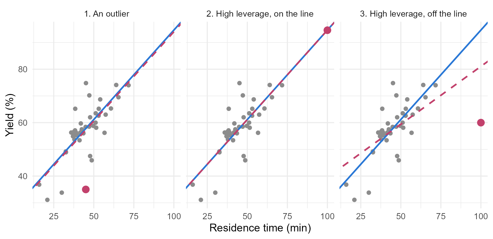

Module 2 · Lesson 10 of 15 Week 40 of 160 About 5–7 hours
Outliers and influence
Finding the points that don’t fit, and the points that move the fit, and deciding what to do
Tell outliers, high-leverage points and influential points apart, measure them with leverage, studentized residuals, Cook’s distance, DFFITS and DFBETAS, and decide what to do: investigate, correct, exclude with a reason, report both fits, or use robust regression.
Two runs have been following us around. P047 had a huge negative residual, and a note about a stirrer. P066 had an even bigger positive one, and a temperature that didn’t match its jacket. Lesson 7’s flatter slope for catalyst B vanished when Lesson 9 set P066 aside, and the curve in the yield only showed up clearly without it. This lesson opens the case properly: how do you find the points that matter, measure how much they matter, and decide what to do about them, fairly and on the record?
Court is in session! The suspects: P047 and P066. The evidence: leverage, residuals and influence. And remember, every point is innocent until proven guilty. Being unusual isn’t a crime.
In this lesson you’ll:
- tell apart three kinds of unusual point: outliers, high-leverage points and influential points
- measure leverage, and find the runs with unusual settings
- find outliers with studentized residuals, and test them fairly
- measure influence with Cook’s distance, DFFITS and DFBETAS
- decide what to do about unusual points, and record it
- try robust regression, which downweights outliers by itself
Three kinds of unusual
It’s easiest to see in two dimensions. Here’s the March batches’ yield against residence time, with one made-up batch added in each panel (in rose). The blue line is the fit without the extra batch, and the rose line the fit with it:
batches <- read_csv("data/batches.csv", show_col_types = FALSE)
extras <- tibble(case = c("1. An outlier", "2. High leverage, on the line", "3. High leverage, off the line"),
residence_min = c(45, 100, 100), yield_pct = c(35, 94.6, 60))
lines <- bind_rows(lapply(seq_len(nrow(extras)), function(i) {
with_extra <- bind_rows(select(batches, residence_min, yield_pct), extras[i, c("residence_min", "yield_pct")])
b <- coef(lm(yield_pct ~ residence_min, data = with_extra))
tibble(case = extras$case[i], intercept = b[1], slope = b[2])
}))
base <- coef(lm(yield_pct ~ residence_min, data = batches))
ggplot(batches, aes(x = residence_min, y = yield_pct)) +
geom_point(size = 1.5, color = "grey55") +
geom_abline(intercept = base[1], slope = base[2], color = "#2a78d6", linewidth = 0.8) +
geom_abline(data = lines, aes(intercept = intercept, slope = slope), color = "#C2416C", linewidth = 0.8, linetype = "dashed") +
geom_point(data = extras, color = "#C2416C", size = 3) +
facet_wrap(~ case) +
labs(x = "Residence time (min)", y = "Yield (%)") +
theme_minimal(base_size = 11)
- An outlier is a point whose response is far from what the model predicts. The first extra batch has a typical residence time and a terrible yield. It drags the line down a little, but hardly tilts it: its slope stays at 0.67.
- High leverage means unusual predictor values. The second batch ran for 100 minutes, far beyond the others, but its yield is exactly what the line predicts. It changes nothing, and it even makes the slope more precise.
- An influential point is one whose removal would change the fit a lot. The third batch has high leverage and sits far off the line, so it pulls the slope from 0.67 down to 0.43 on its own.
Influence needs both ingredients: an unusual x gives a point the lever, and a large residual gives it a reason to pull. With many predictors you can’t see all this in one scatterplot, so you need numbers. The rest of this lesson computes them for the process study’s best model so far: last lesson’s curved interaction model, plus Lesson 8’s catalyst age. It’s fitted to all 120 runs, suspects included:
fit <- lm(yield_pct ~ temp_C * catalyst + I((temp_C - 185)^2) + residence_min + feed_water_ppm + catalyst_age,
data = study)Leverage
Leverage is the diagonal of the hat matrix, h_{ii}, from Lesson 4. It measures how far a run’s predictor values are from the rest, taking all the predictors into account at once, including the curved and interaction terms. The leverages average p/n, where p counts the coefficients. This model has p = 10 and n = 120, so the average is 0.083, and the usual flag, twice the average, is 2p/n = 0.17.
study |>
mutate(leverage = hatvalues(fit)) |>
arrange(desc(leverage)) |>
select(run_id, catalyst, temp_C, residence_min, leverage) |>
head(5)
#> # A tibble: 5 × 5
#> run_id catalyst temp_C residence_min leverage
#> <chr> <chr> <dbl> <dbl> <dbl>
#> 1 P066 B 158. 38.6 0.386
#> 2 P019 A 206. 75.8 0.181
#> 3 P105 C 206. 71.9 0.154
#> 4 P043 C 206. 63.9 0.148
#> 5 P115 C 180. 95 0.148P066 stands out, with a leverage of 0.39, more than twice the flag: a catalyst B run at 158 °C is unlike anything else in the study. Its temperature alone gives it a long lever, and the squared term lengthens it. Next come runs at the corners of the design, like P019 at 206 °C with 76 minutes of residence time. They’re unusual, but legitimately so: the study was designed to cover those corners. And P115, the deliberate 95-minute trial, has a leverage of 0.15.
Your turn. Which runs pass the 2p/n flag?
The flag is twice the average leverage: 2 * p / n.
p <- length(coef(fit))
n <- nrow(study)
study |>
mutate(leverage = hatvalues(fit)) |>
filter(leverage > 2 * p / n) |>
select(run_id, temp_C, residence_min, leverage)Two runs: P066 (0.39) and P019 (0.18). High leverage is a reason to look closely at a run, not a reason to remove it. P019 is a legitimate corner of the design. P066 is the one with a story to check.
Outliers: studentized residuals
A raw residual is hard to judge on its own: is −11 big? Lesson 8’s standardized residuals divide each residual by its standard deviation, s\sqrt{1 - h_{ii}}. But there’s a catch. An outlier inflates s, and if it has high leverage, it also pulls the fit towards itself. Either way, it hides.
The cure is to judge each point by a model fitted without it. The studentized residual (also called the externally studentized, or deleted, residual) does exactly that:
t_i = \frac{e_i}{s_{(i)}\sqrt{1 - h_{ii}}},
where s_{(i)} is the residual standard error with observation i left out. If the model is right, t_i follows a t distribution with n - p - 1 degrees of freedom. rstudent() computes them all at once, without actually refitting 120 times (there’s a neat formula for it).
study |>
mutate(t = rstudent(fit)) |>
arrange(desc(abs(t))) |>
select(run_id, temp_C, yield_pct, t) |>
head(4)
#> # A tibble: 4 × 4
#> run_id temp_C yield_pct t
#> <chr> <dbl> <dbl> <dbl>
#> 1 P066 158. 64.6 8.68
#> 2 P047 183. 41.6 -4.36
#> 3 P040 185. 67.5 2.08
#> 4 P104 184 67.3 2.06P066’s studentized residual is 8.7, and P047’s is −4.4. Everything else is within ±2.1. Are they significantly unusual? Be careful: you’re looking at the most extreme of 120 residuals, so a fair test must allow for picking the worst. The Bonferroni outlier test multiplies each two-sided p-value by n, the number of residuals you looked at. car::outlierTest(fit) does it for you, too.
Your turn. Compute P047’s Bonferroni-adjusted p-value.
Multiply by the number of residuals examined, nrow(study), which is 120.
t_47 <- rstudent(fit)[study$run_id == "P047"]
df <- nrow(study) - length(coef(fit)) - 1
p_one <- 2 * pt(-abs(t_47), df = df)
unname(min(1, nrow(study) * p_one))0.0036: even allowing for having picked the most extreme residuals out of 120, P047 is a genuine outlier. P066’s adjusted p-value is 5 \times 10^{-12}. These two runs don’t belong to the same pattern as the others.
Influence: Cook’s distance
Neither leverage nor residuals measure influence directly. Cook’s distance does: it measures how far all the fitted values move when observation i is left out, scaled by the model’s uncertainty. It also has a formula that shows the two ingredients multiplied together:
D_i = \frac{r_i^2}{p} \cdot \frac{h_{ii}}{1 - h_{ii}},
where r_i is the standardized residual. A big residual with tiny leverage has a small D_i, and so does a big leverage with a tiny residual. Two rough flags are common: D_i > 4/n deserves a look, and D_i > 1 means the point moves the fit about as much as the whole confidence region for the coefficients.
study |>
mutate(cook = cooks.distance(fit)) |>
arrange(desc(cook)) |>
select(run_id, cook) |>
head(4)
#> # A tibble: 4 × 2
#> run_id cook
#> <chr> <dbl>
#> 1 P066 2.82
#> 2 P047 0.117
#> 3 P019 0.0467
#> 4 P080 0.0427P066’s Cook’s distance is 2.8. No other run comes close: P047 is next at 0.12, and every other run is below 0.05. P047 is a big outlier with ordinary leverage. P066 is a big outlier with a big lever, and that combination is what makes it dangerous.
Your turn. Check the formula for P066 by building its Cook’s distance from its standardized residual and its leverage.
The second factor is h_{ii}/(1 - h_{ii}).
i <- which(study$run_id == "P066")
r <- rstandard(fit)[i]
h <- hatvalues(fit)[i]
p <- length(coef(fit))
unname(r^2 / p * h / (1 - h))2.82, the same as cooks.distance(fit). Its standardized residual, 6.7, squared and divided by p, gives 4.5, and its leverage factor, 0.39/0.61 = 0.63, scales that to 2.8.
Which coefficients move? DFFITS and DFBETAS
Cook’s distance says how much a point moves the fit. Two more measures say where:
- DFFITS is the change in a point’s own fitted value when it’s left out, in standard errors. A common flag is |\text{DFFITS}| > 2\sqrt{p/n}.
- DFBETAS is the change in each coefficient when the point is left out, in standard errors: one number per point per coefficient. A common flag is |\text{DFBETAS}| > 2/\sqrt{n}, here 0.18. Values above 1 mean the point alone moves a coefficient by more than its standard error.
DFBETAS answer the question that matters most: which conclusions depend on this point? dfbetas(fit) returns the whole matrix. Here’s P066’s row:
round(dfbetas(fit)[study$run_id == "P066", ], 2)
#> (Intercept) temp_C catalystB catalystC
#> 0.89 -0.99 2.95 0.02
#> I((temp_C - 185)^2) residence_min feed_water_ppm catalyst_age
#> 4.78 0.35 -0.53 -0.65
#> temp_C:catalystB temp_C:catalystC
#> -2.87 -0.03That’s the smoking gun. P066 moves the squared temperature term by 4.8 standard errors, and catalyst B’s main effect and its temperature interaction by about 3 each. With P066 in the data, the squared term in this model is barely distinguishable from zero (p = 0.07), and B looks less temperature-sensitive than A, as it did in Lesson 7. A catalyst B run, recorded at an impossibly low temperature with a perfectly normal yield, makes B look as if temperature hardly matters to it, and straightens the curve.
P047 is different: its biggest DFBETAS is −0.80, for the feed water. It was a wet Kestrel run that failed for another reason, the stirrer, so it exaggerates how much water hurts.
Your turn. Find the coefficient that P047 moves the most, using its row of DFBETAS.
Find the largest absolute value in row_47.
row_47 <- dfbetas(fit)[study$run_id == "P047", ]
row_47[which.max(abs(row_47))]The feed water coefficient, by −0.80 standard errors: with P047 in the data, water looks a little more harmful than it is.
The verdict: what to do with unusual points
Diagnostics find suspects. They don’t convict. Here’s a fair procedure:
- Investigate. Check the records: the notes, the logbooks, the sensor data, the people. Is there a mistake, or a known cause?
- Correct errors you can confirm, and record the correction and its evidence.
- Exclude points with a known cause that puts them outside the question you’re asking. Record that too.
- Keep everything else, however inconvenient. Never delete a point just because it doesn’t fit: that’s how real discoveries get thrown away.
- When you can’t decide, report both fits, with and without the point, and say how much the conclusions change. Robust regression (below) is a good third opinion.
Now the evidence. P066. Its recorded temperature is 158.1 °C, but its jacket read 196.3 °C. In every other run, the reactor temperature can be predicted from the jacket temperature to within a couple of degrees, and for P066 that prediction is 185.3 °C. The reactor pressure, which also tracks the temperature, points the same way. And “185.1” with two digits swapped is “158.1”. The evidence for a typing error is overwhelming, so correct it to 185.1 °C, and write the correction in the cleaning log (Module 1, Lesson 11).
P047. The operators noted that its stirrer tripped twice. The study’s question is how the process behaves when it’s running properly, and a batch with a failed stirrer isn’t an example of that. So exclude it from the model, with that reason recorded. (If the question were “how often do batches fail, and what does it cost?”, P047 would be essential data.)
P115, the deliberate 95-minute trial? Unusual settings, but a studentized residual of 0.2 and a Cook’s distance of 0.001. It fits the model perfectly, and it’s the only evidence about long runs. Keep it.
Here’s what the decisions change:
| Coefficient | All 120 runs | P066 corrected | P066 corrected, P047 excluded |
|---|---|---|---|
| squared temperature | −0.0038 | −0.0115 | −0.0126 |
| temperature × catalyst B | −0.115 | 0.009 | 0.010 |
| temperature × catalyst C | 0.263 | 0.265 | 0.255 |
| feed water | −0.0660 | −0.0634 | −0.0580 |
| catalyst age | −0.602 | −0.558 | −0.569 |
| residual standard error | 3.02 | 2.33 | 1.96 |
One wrong digit was hiding the curvature, faking an interaction, and inflating the residual standard error by 30%. The C interaction, which never depended on P066, barely moves. From now on, the module uses the cleaned study: P066 corrected and P047 excluded.
Your turn. Apply both decisions, refit the model, and look at the B interaction’s test.
The corrected temperature is 185.1.
clean <- study |>
mutate(temp_C = if_else(run_id == "P066", 185.1, temp_C)) |>
filter(run_id != "P047")
fit_clean <- lm(yield_pct ~ temp_C * catalyst + I((temp_C - 185)^2) + residence_min + feed_water_ppm + catalyst_age,
data = clean)
summary(fit_clean)$coefficients["temp_C:catalystB", ]An estimate of 0.010, with p = 0.80: catalysts A and B respond to temperature in the same way after all. Lesson 7’s “B is less temperature-sensitive” was P066 all along.
Challenge round
Challenge 1 · A robust third opinion. Robust regression fits the model in a way that gives less weight to points with big residuals, automatically. MASS::rlm() uses Huber weights: points with small residuals get full weight, and large ones get less and less. Fit it to the uncleaned data, and look at the weights it gave P066 and P047.
The other run is "P066".
fit_r <- MASS::rlm(yield_pct ~ temp_C * catalyst + I((temp_C - 185)^2) + residence_min + feed_water_ppm + catalyst_age,
data = study)
weights <- fit_r$w
weights[study$run_id %in% c("P047", "P066")]0.19 for P047 and 0.10 for P066, while every other run got at least 0.47. Without being told anything, robust regression found the same two suspects, and its squared-temperature coefficient, −0.0107, lands close to the cleaned fit’s −0.0126. It’s a great cross-check. But it isn’t a substitute for investigating: it would have downweighted P066 forever without ever finding the typo, and it’s less effective against high-leverage points, which can pull the fit close enough to hide their residuals.
Challenge 2 · Everything at once. influence.measures(fit) computes the DFBETAS, DFFITS, covariance ratios, Cook’s distances and leverages for every run, and its $is.inf element marks which ones pass each flag. Which runs are flagged by at least one measure?
A run is flagged if any() of its measures is flagged: apply(inf$is.inf, 1, any).
inf <- influence.measures(fit)
flagged <- apply(inf$is.inf, 1, any)
study$run_id[flagged]P047, P066 and P115. P115 is flagged by the covariance ratio, which measures how much a point changes the precision of the coefficients. P115’s ratio is 1.28, above 1: it makes the estimates more precise, because it’s the only long run. Flags are invitations to look, not verdicts. (influence.measures() uses stricter, size-adjusted cut-offs than the rules of thumb in this lesson, so it flags fewer runs.)
Quick quiz
1. What gives an observation high leverage?
Leverage comes from the hat matrix, which depends on X alone.
2. A run with very high leverage sits exactly on the fitted line. Is it a problem?
Influence needs both a long lever and a large residual. P115, the 95-minute trial, is a high-leverage point of this good kind.
3. Why do studentized residuals leave each point out of the estimate of s?
Judging each point against a fit that doesn’t include it makes outliers stand out, and gives the residual an exact t distribution under the model.
4. Why multiply an outlier test’s p-value by n?
That’s the Bonferroni correction for looking at all n residuals. Without it, you’d “find” an outlier in almost every dataset.
5. A point’s DFBETAS for the squared temperature term is 4.8. What does it mean?
DFBETAS measure the change in each coefficient when a point is deleted, scaled by the coefficient’s standard error.
6. An influential point has no explanation in the records. What should you do?
Without evidence of an error or a known cause, the point is data. Showing both fits lets readers see which conclusions depend on it.
Wrap-up
Case closed! Here’s what you’ve learned:
- Three kinds of unusual point: outliers (unusual y given x), high-leverage points (unusual x), and influential points (removing them changes the fit). Influence needs both a long lever and a large residual.
- Leverage is h_{ii} (
hatvalues()). It averages p/n. Flag values above 2p/n. - Studentized residuals (
rstudent()) judge each point against a fit without it. Test the most extreme with a Bonferroni correction (car::outlierTest()). - Cook’s distance (
cooks.distance()) combines the residual and the leverage: D_i = (r_i^2/p)\,h_{ii}/(1 - h_{ii}). Values above 1 are alarming. - DFFITS and DFBETAS (
dffits(),dfbetas()) show how much a point moves its own prediction and each coefficient, in standard errors.influence.measures()computes everything. - The verdict: investigate, correct what you can confirm, exclude only with a known reason that puts a point outside the question, keep the rest, and record every decision. Report both fits when in doubt. Robust regression (
MASS::rlm()) is a cross-check, not a replacement. - The process study’s verdict: P066’s temperature was a typo (185.1 °C, confirmed by the jacket and pressure), and it had hidden the curvature and faked a B interaction. P047, with its failed stirrer, is excluded. P115 stays.
TipPractice in RStudio (optional, about an hour)
Download process_study.csv into your project’s data-raw/ folder, and install the car package if you haven’t yet.
- The car package’s influence plots. Run
car::influencePlot(fit): a bubble plot of studentized residuals against leverage, with bubbles sized by Cook’s distance. Thencar::outlierTest(fit)andcar::infIndexPlot(fit). - The fourth standard plot.
plot(fit, which = 5)is “Residuals vs Leverage”, with contours of Cook’s distance. Find P066 on it. - Leave-one-out by brute force. For each run, refit the model without it, and store the squared-temperature coefficient. Plot the 120 values. Check that P066 is the one that changes it most, and that the change matches its DFBETAS times the standard error (roughly: DFBETAS uses s_{(i)}).
- The project’s typos. The handover for the module project (R3 commissioning) was typed by hand too. When you get there, run this lesson’s diagnostics before you trust any model.
NoteKey words from this lesson
- Outlier
- An observation whose response is far from what the model predicts for its predictor values.
- Leverage
- An observation’s diagonal element of the hat matrix, h_{ii}, measuring how unusual its predictor values are.
- Influential observation
- An observation whose removal would change the fitted model substantially.
- Studentized (deleted) residual
- A residual divided by its standard error estimated without that observation, e_i / (s_{(i)}\sqrt{1 - h_{ii}}).
- Bonferroni outlier test
- A test of the most extreme studentized residual that multiplies its p-value by the number of residuals examined.
- Cook’s distance
- A measure of how much all the fitted values change when an observation is removed.
- DFFITS and DFBETAS
- The change in an observation’s own fitted value (DFFITS) and in each coefficient (DFBETAS) when it’s removed, in standard errors.
- Robust regression
- Fitting methods that downweight observations with large residuals, so that a few outliers can’t dominate the fit.
NoteWant to read more?
- Penn State STAT 501, Lesson 11: Influential Points. Leverage, studentized residuals, Cook’s distance, DFFITS and DFBETAS, with clear examples.
- John Fox, Regression Diagnostics: An Introduction (Sage, 2nd edition, 2020). A short book by the author of the car package that covers this lesson and Lesson 8 in depth.
- NIST/SEMATECH e-Handbook of Statistical Methods, “Detection of outliers”. Outlier tests from the engineering side, including why repeated testing needs care.